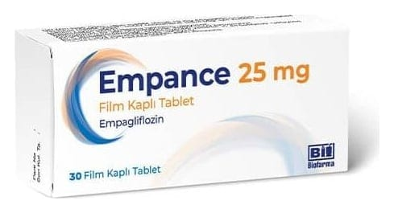

Empance 25 mg Film Kaplı Tablet, 30 Adet

Ne için kullanılır
KT · Bölüm 1EMPANCE, açık sarı renkli, oval, bikonveks film kaplı tablettir.
EMPANCE, 30 film kaplı tablet içeren blister ambalajlarda takdim edilmektedir.
EMPANCE, etkin madde olarak, empagliflozin içerir ve sodyum glukoz ko-transporter 2 (SGLT-2) inhibitörleri olarak adlandırılan bir ilaç grubuna aittir.
Empagliflozin, böbreklerde bulunan sodyum glukoz-ko-transporter 2 (SGLT-2) adlı proteini bloke ederek etkisini gösterir. SGLT-2, kan böbreklerden süzülürken, kan şekerinin emilerek kan dolaşımına geçmesini sağlar ve idrarla atılımını önler. Bu ilaç, bu proteini bloke ederek, kan şekerinin (glukoz), sodyumun (tuz) ve suyun idrarla atılmasına neden olur. Tip 2 diyabet hastalığınız nedeniyle çok yüksek olan kan şekeri düzeyiniz buna bağlı olarak düşer.
• EMPANCE, erişkin hastalarda (18 yaş ve üzeri), tek başına diyet ve egzersiz ile kontrol edilemeyen tip 2 diyabet (şeker hastalığı) tedavisinde kullanılır. • EMPANCE, metformin (diğer bir şeker hastalığı ilacı) kullanamayan hastalarda tek başına, diğer ilaçlar olmadan kullanılabilir. • EMPANCE diğer ilaçlarla birlikte de diyabet tedavisinde kullanılabilir. Bu ilaçlar ağızdan alınabilir veya insülin gibi enjeksiyon ile uygulanabilir.
Doktorunuz, eczacınız veya hemşirenizin size anlattığı diyet ve egzersiz programına devam etmeniz son derece önemlidir.
EMPANCE nasıl etki gösterir? EMPANCE, böbreklerde bulunan sodyum glukoz ko-transporter 2 (SGLT-2) adlı proteini bloke ederek etkisini gösterir. Bu idrarınızdan kan şekerinin (glukoz) uzaklaştırılmasına neden olur. Böylece EMPANCE kanınızdaki şeker miktarını azaltır.
Tip 2 diyabet nedir? Tip 2 diyabet, genlerinizden ve yaşam tarzınızdan kaynaklanan bir hastalıktır. Eğer tip 2 diyabetiniz varsa, pankreasınız kanınızdaki şeker düzeyini kontrol etmek için yeterli insülini üretemiyor ve vücudunuz kendi insülinini etkili şekilde kullanamıyor demektir. Bu durum, kanınızda şeker düzeylerinin yüksek olması ile sonuçlanır, bu da kalp hastalığına, böbrek hastalığına, körlük ve kol ve bacaklarınızda kan dolaşımının bozuk olmasına yol açabilir.